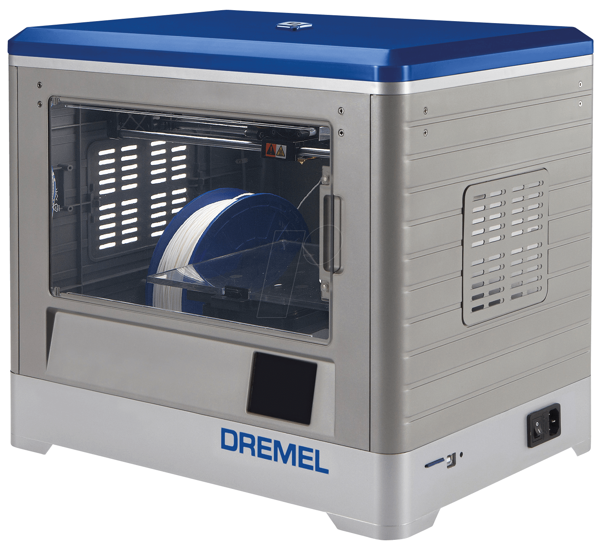

Makerspace 3D Printing Guide
What is 3D printing
3D printing is an additive manufacturing process which creates a three-dimensional object from a digital model.There are many different ways to 3D print. At the uOttawa Makerspace, we use FDM (fused deposition modeling) which works by slicing the model into layers and then printing one layer on top of the other. The material that we use is a type of plastic known as PLA (Polylactic acid). This
The material that we use is a type of plastic known as PLA (Polylactic acid). This plastic is special because of the temperature at a specific temperature, it melts and cools down at known ranges that are easy to work with.
Which 3D printers do we have?
Ultimaker 2+ 
|
Dimensions
Layer Thickenss
Supported Filament
Special Feature
|
|
|---|---|---|
Repicator 2
|
Dimensions
Layer Precision
Supported Filament
|
|
Replicator 2x 
|
Dimensions
Layer precision
Supported Filament
Special Feature
|
|
| Dremel  |
Dimensions
Layer Thickenss
Supported Filament
|
|
Comparing Printers
There is a triangle of priorities to consider when selecting which 3D printer. Click "More +" to see more details on each 3D printer.
How do I 3D print at the makerspace?
At the makerspace we have several different types (brands) of printers. When printing you will encounter either the Ultimaker, Makerbot, or Dremel. In general, the processes are similar.
- Create/find a 3D model
- Save or download the model as an .stl
- Open model in a slicer
- Generate machine code
- Send the code on the 3D printer
- Start the print
1. Create a 3D model
There are many ways to create or find a 3D model. If you want to browse through a library, Thingiverse or Youmagine. These sites are a great way to inspire yourself. If you are more of a do it yourself type of person there are several programs you can try.
If you are a beginner, try Tinkercad. This is a browser based 3D design application that is very simple to learn. For more information check out this handy guide. If you need something a little more advanced, check out Fusion 360.
2. Save or download the model as an .stl
What is an .stl file? It is a stereolithography file format. This type of file uses a web of polygons to describe a 3D object. It is this easiest and the default file type with most of 3D printing software.
3. Open Model in a slicer
Your .stl file contains a set of triangles in 3D space. If you send this to a 3D printer, it will not know what to do. A slicer “slices” the 3D object into layers and then generates machine code. Different printers work better with different slicers. The slicers need to be downloaded onto your computer. However, all our computers have all the software for each of our printers.